FMOD Studio User Manual 2.02
- Welcome to FMOD Studio
- FMOD Studio Concepts
- Organizing the Project
- Authoring Events
- Working with Instruments
- Managing Assets
- Parameters
- Getting Events into Your Game
- Mixing
- The Sandbox
- Editing During Live Update
- Profiling
- Dialogue and Localization
- Using Source Control
- Supporting Downloadable and User-generated Content
- Advanced Topics
- Quick Start Tutorial
- Event Macros Drawer Reference
- Instrument Reference
- Plug-in Reference
- Modulator Reference
- Parameters Reference
- Scripting
- Scripting API Reference
- Keyboard Shortcut Reference
- Troubleshooting
- Glossary
- Appendix: Celeste Getting Started Guide
- Appendix: Reaper Integration
19. Instrument Reference
Instruments are fundamental to playing audio content in FMOD Studio, as well as for triggering certain kinds of behavior. This chapter describes the various types of instrument, as well as detailed information about their properties, behaviors, and features.
19.1 Common Instrument Properties
While each type of instrument has a unique list of controls and properties, there are some features that all instruments have in common.
19.1.1 Instrument Trigger Region Properties
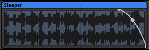
All instruments are displayed as trigger regions on the tracks and action sheets of events. These trigger regions display certain important properties of the instrument at all times.
- Name (Text field)
- 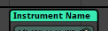
- The name of an instrument appears at the top of its trigger region. By default, instruments are named after their instrument type or content. If an instrument's name is something other than its instrument type, its type is parenthetically appended to the name displayed on the trigger region.
- Color (Color)
- The color of an instrument's trigger region has no effect on in-game behavior, but can make the instrument easier to identify at a glance in FMOD Studio. When first created, an instrument's color is determined by its type.
- Sheet (Tab)
- 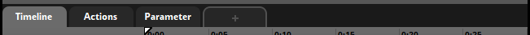
- The action sheet or parameter sheet on which an instrument's trigger region appears determines which parameter or event state can trigger the instrument.
- Position (Multiple means of editing)
- For instruments on parameter sheets, the horizontal position and length of the trigger region defines the range of parameter values that can trigger the instrument. For synchronous instruments, the horizontal position of the trigger region also determines which part of the associated asset plays when the instrument is overlapped by the timeline's playback position.
Units: Parameter units. - Length (Multiple means of editing)
- For instruments on parameter sheets, the horizontal position and length of the trigger region defines the range of parameter values that can trigger the instrument. For synchronous instruments, the length of the trigger region also determines when the timeline's playback position stops overlapping the instrument, and thus when the instrument must stop playing.
Units: Parameter units.
19.1.2 Instrument Deck Properties

In addition to the properties displayed on their trigger regions, instruments have properties that appear in the deck while the instrument's trigger region is selected in the editor. Information about specific deck properties can be found in the sections describing individual instrument types, later in this chapter.
19.1.3 Trigger Behavior Properties
Additional properties can be found in instruments' trigger behavior drawers. Instrument trigger behavior drawers are divided into two sections, "Conditions" and "Delay & Quantization." These sections define the circumstances in which the instrument can be triggered.
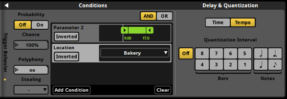 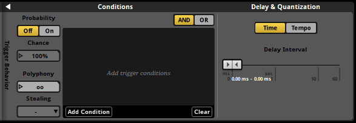
There are three kinds of trigger condition: Probability, parameter, and event. Instruments can be given all three kinds, in any combination. For information about how to add trigger conditions to events, see the Trigger Conditions section of the Working with Instruments chapter.
Probability trigger conditions specify a chance that the instrument triggers each time the instrument's other trigger behavior dictates that it should be triggered, i.e.: when the instrument is overlapped by the playback position, the playback position is at a bar or beat to which the instrument is quantized, and either all the instrument's parameter and event trigger conditions are met (if the instrument's AND/OR buttons are set to "AND") or at least one of the instrument's parameter and event trigger conditions are met (if the instrument's AND/OR buttons are set to "OR"). An instrument can have no more than one probability trigger condition.
- Probability (Toggle button)
- 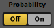
- If toggled on, the instrument has a probability trigger condition. If toggled off, the instrument does not, and the value of the chance property is ignored.
- Chance (Number box)
- 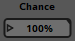
- This is the percentage chance that the instrument is triggered. This property is checked against a random number each time the instrument's other trigger behavior dictates it should be triggered.
Units: Percentage Points.
Automatable.
Parameter trigger conditions specify a parameter and a range of values into which that parameter's value must fall for the condition to be true. Event trigger conditions specify play states that the event must be in for the condition to be true. An instrument can have any number of event or parameter trigger conditions.
- AND/OR (Radio buttons)
- 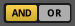
- These buttons determine which event or parameter conditions must be met for the instrument to be triggered when there are multiple event or parameter conditions present. If they are set to "OR," only one of the instrument's event or parameter conditions must be met; whereas if they are set to "AND," all of the instrument's event and parameter conditions must be met.
- Conditions list (Multiple means of editing)
- 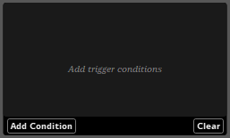
- The conditions list contains all the parameter and event conditions associated with the instrument. It does not include the instrument's probability trigger condition, if any. Each event or parameter trigger condition has properties of its own.
- Parameter Name (Text field)
- 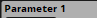
- The name of the parameter used by a parameter condition. Changing this property alters the name of the preset parameter.
- Parameter Range (Ribbon slider)
- 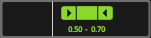
- The range of values that the parameter must have for the parameter condition to be met (or not met, if the condition is inverted). This property only appears for parameter conditions based on built-in parameters and discrete and continuous user parameters.
- Parameter Value (Dropdown menu)
- 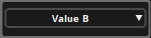
- The specific value that the parameter must have for the parameter condition to be met (or not met, if the condition is inverted). This property only appears for parameter conditions based on labeled parameters.
- Inverted (Toggle button)
- 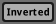
- This toggle button determines whether the parameter's value must match or not match the parameter condition's parameter range or parameter value for the condition to be met. If inverted is toggled off, the parameter's value must match the parameter condition's parameter range or value; if it is toggled on, the parameter's value must not match the parameter condition's range or value.
- Polyphony (Number box)
- 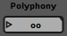
- Polyphony defines the maximum number of simultaneously playing instances of the instrument that can be triggered by the parent event instance. If the event instance attempts to trigger a new instance of the instrument while the number of playing instances of that instrument triggered by the same event instance is equal to the polyphony, whether a new instance is played and an existing one culled depends on the instrument's stealing behavior.
- Stealing (Dropdown menu)
- 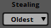
- The stealing mode of an instrument determines what happens when the instrument is triggered and playing a new instance of the instrument would cause the number of simultaneously playing instances of that instrument triggered by the same event instance to exceed the instrument's polyphony. If stealing is set to oldest, the oldest instance of the instrument immediately stops as the new instance begins; whereas if stealing is set to none, no instance of the instrument is stopped and no new instance of the instrument begins playing.
In addition to conditions, the trigger behavior drawer also contains controls for delay and quantization.
- Time/Tempo control (Radio buttons)
- 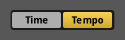
- If this control is set to time, the instrument waits to play for a period of time after being triggered defined by the delay interval property: If the instrument is asynchronous, it waits for the period of time specified by the delay interval property before playing; and if it is sychronous, it only plays if it is still overlapped by the parameter playback position after the period of time specified by the delay interval. If this control is instead set to tempo, the instrument only triggers on specific beats or bars specified by the quantization interval property.
- Delay Interval (Ribbon slider)
- 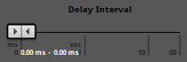
- Delay interval defines the period of time that must elapse after the instrument is triggered before it begins playing. If the minimum and maximum values of the ribbon slider are the same, the period of time's length is fixed. If the minimum and maximum values of the ribbon slider differ, the period of time's length is randomized within that range each time the instrument's trigger conditions are met.
Units: Milliseconds or seconds. - Quantization Interval (Radio buttons)
- 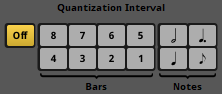
- An instrument's quantization interval specifies on which of the timeline's beats or bars the instrument's trigger conditions are checked while the instrument is overlapped by the playback position. The bar and beat numbers used by this property are those that appear on the timeline when the editor is set to beats mode, as defined by the event's tempo markers.
19.2 Single Instrument
Single instruments are a kind of instrument that can hold only one audio file. As such, single instruments lack playlists, but otherwise closely resemble multi instruments. Single instruments are the foundation of most other instrument types.
19.2.1 Single Instrument Trigger Region Properties
- Content Graphic (Graphic)
- The waveform of the audio asset associated with a single instrument is displayed on its trigger region. If the instrument is asynchronous, this content is surrounded by a border. If the instrument is synchronous and its play count is greater than one, multiple copies of the waveform may be displayed, provided the trigger region is long enough.
- Fade Curves (Mouse-editable graphics)
- 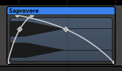
- A fade curve defines how an instrument's volume ramps from silence to full volume when the playback position moves onto the instrument, or how it ramps from full volume to silence when the playback position moves off the instrument. Instruments on action sheets can not have fade curves. Each instrument on a parameter sheet can have one fade curve for its left side, and one fade curve for its right. Instruments do not have fade curves by default.
19.2.2 Single Instrument Deck Properties
- Volume (Dial)
- 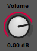
- Volume defines the gain applied to the instrument's output.
Units: Decibels.
Automatable and Modulatable. - Pitch (Number box)
- 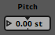
- Pitch defines the amount of pitch adjustment applied to the instrument's output. The pitch properties of instruments on parameter sheets other than the timeline sheet are compatible with autopitch modulators.
Units: Semitones.
Automatable and Modulatable. - Start Offset (Number box)

- The start offset of a single instrument determines the point within its associated audio asset from which it starts playing when the instrument is triggered, expressed as a percentage of the length of the audio file associated with the instrument. For asynchronous instruments, this directly determines the position from which the associated audio file begins to play when the instrument is triggered. For synchronous instruments, this offset is added to the position of the playback position inside the instrument's waveform, and so is an exception to the rule that the part of a single instrument's waveform that plays is the part of the waveform that's overlapped by the playback position.
Units: Percentage points.
Automatable and Modulatable. - Async (Toggle button)

- A single instrument's synchronous or asynchronous state determines whether it is possible to seek or scrub within the waveform displayed on its trigger region. If an instrument is synchronous, the section of the waveform underneath the timeline playback position is the part of the asset that plays while the instrument is triggered; whereas if the instrument is asychronous, the playback position's location on the instrument has no effect on which part of the associated asset plays. Instruments on parameters other than the timeline are always asynchronous. For more information about synchronous and asynchronous instruments, see the Synchronous and Asynchronous Instruments section of the Working With Instruments chapter.
- Cut (Toggle button)
- 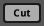
- An asynchronous instrument's cut mode determines whether it stops playing when its trigger conditions cease being met. The cut toggle button only appears in the deck of asynchronous instruments.
- Loop Instrument (Toggle button)
- 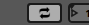
- Looping a synchronous instrument causes it to loop in accordance with its play count property. Specifically, the play count of a synchronous instrument is the number of times its content graphic is iterated on that instrument's trigger region, limited by the amount of horizontal space on that trigger region; whereas the play count of an asynchronous instrument is the number of times that instrument plays its associated audio file when triggered. This toggle button is visually identical to the Loop Playlist button found on multi instruments, but differs in function.
- Play Count (Number box)
- 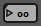 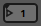
- This property is only available for instruments whose loop instrument toggle buttons are enabled. It determines the number of times that instrument can loop, as described in the sections on those toggle buttons. If this property is infinite on an asynchronous instrument, the associated instrument or playlist will finish playing out its current loop when the instrument is untriggered, then stop; but if it is finite, it will loop a number of times equal to play count even if the instrument is untriggered before it is finished.
- Asset Preview (Graphic)
- 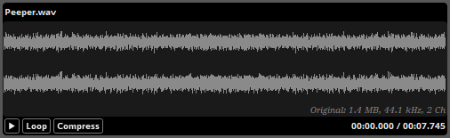
- The waveform of the audio asset associated with a single instrument is displayed in its asset preview.
19.3 Multi Instrument
A multi instrument is a kind of instrument with a playlist. When the instrument is triggered, an item from its playlist is selected for play. A multi instrument's playlist can contain nearly any kind of instrument, including single instruments, event instruments, programmer instruments, command instruments, silence instruments, and other multi instruments.
19.3.1 Multi Instrument Trigger Region Properties
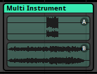
- Content Graphic (Multiple means of editing)
- The waveforms and timelines of the instruments in a multi instrument's playlist are displayed on its trigger region. If there is enough room, each playlist entry's content is marked by a letter in a circle, corresponding to the letter that appears on that playlist entry in the deck. If the instrument is asynchronous, each playlist entry's content is surrounded by a border.
- Fade Curves (Mouse-editable graphics)
- 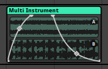
- A fade curve defines how an instrument's volume ramps from silence to full volume when the playback position moves onto the instrument, or how it ramps from full volume to silence when the playback position moves off the instrument. Instruments on action sheets can not have fade curves. Each instrument on a parameter sheet can have one fade curve for its left side, and one fade curve for its right. Instruments do not have fade curves by default.
19.3.2 Multi Instrument Deck Properties
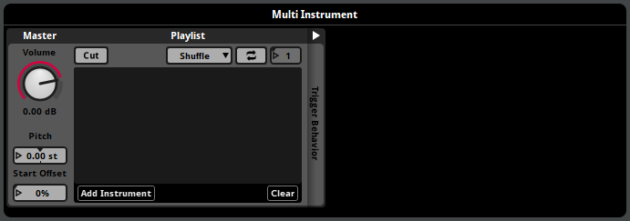
- Volume (Dial)
- Volume defines the gain applied to the instrument's output.
Units: Decibels.
Automatable and Modulatable. - Pitch (Number box)
- Pitch defines the amount of pitch adjustment applied to the instrument's output. The pitch properties of instruments on parameter sheets other than the timeline sheet are compatible with autopitch modulators.
Units: Semitones.
Automatable and Modulatable. - Start Offset (Number box)
- The start offset of a multi instrument determines the point within the first playlist entry it selects to play from when the instrument is triggered, expressed as a percentage of the length of that playlist entry. It only affects the first playlist entry selected each time the instrument is triggered. In asynchronous instruments, this directly determines the position from which the associated audio file begins to play when the instrument is triggered. For single, multi, and event instrument playlist entries in synchronous instruments, this offset is added to the position of the playback position inside the instrument's waveform, and so is an exception to the rule that the part of a single instrument's waveform that plays is the part of the waveform that's overlapped by the playback position.
Units: Percentage points.
Automatable and Modulatable. - Async (Toggle button)
- 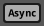
- An instrument's synchronous or asynchronous state determines whether it is possible to seek or scrub within the waveforms displayed on its trigger region. If an instrument is synchronous, the section of the waveform underneath the timeline playback position is the part of the asset that plays while the instrument is triggered; whereas if the instrument is asynchronous, the playback position's location on the instrument has no effect on which part of the associated assets play. Instruments on parameters other than the timeline are always asynchronous. For more information about synchronous and asynchronous instruments, see the Synchronous and Asynchronous Instruments section of the Working With Instruments chapter.
- Cut (Toggle button)
- An asynchronous instrument's cut mode determines whether it stops playing when its trigger conditions cease being met. The cut toggle button only appears in the deck of asynchronous instruments.
- Playlist Selection Mode (Dropdown menu)
- 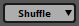
-
This property represents the playlist selection mode of the instrument's playlist. There are four playlist selection modes:
- Shuffle. Items in the playlist are selected for playback in random order. In addition, as long as the playlist contains at least three instruments and does not include play percentages, no instrument in that playlist will be selected twice in a row.
- Randomize. Items in the playlist are selected for playback at random. The frequency and recency with which items have been selected in the past have no bearing on the probability of those items being selected in future.
- Sequential - local scope. Items in the playlist are selected for playback in the order in which they are listed. Only items selected within the same event instance are taken into account, so a new instance of an event always starts by selecting the first item in the playlist.
- Sequential - global scope. Items in the playlist are selected for playback in the order in which they are listed. Every instance of the event is taken into account, so a new instance of an event always selects the playlist item following the item that was selected most recently, even if that item was selected in a different instance of the event.
Playlists are set to shuffle by default.
- Loop Playlist (Toggle button)
- 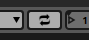
- Looping a synchronous multi instrument causes it to play multiple playlist entries in accordance with its play count property. Specifically, the play count of a synchronous multi instrument represents the maximum number of times it can select playlist entries to play, provided it remains triggered; whereas the play count of an asynchronous instrument is the number of times that instrument selects a playlist entry to play when triggered. This toggle button is visually identical to the Loop Instrument button found on single instruments, but differs in function.
- Play Count (Number box)
- This property is only available for instruments whose loop playlist toggle buttons are enabled. It determines the number of times that instrument can loop, as described in the sections on those toggle buttons. If this property is infinite on an asynchronous instrument, the associated instrument or playlist will finish playing out its current loop then stop looping when the instrument is untriggered; but if it is finite, it will loop a number of times equal to play count even if the instrument is untriggered before it is finished.
- Playlist (Playlist)
- 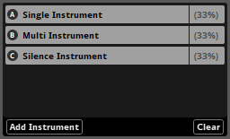
- A list of all the instruments that the multi instrument can select to spawn. Each instrument has a letter that corresponds to the letters that appear on the multi instrument's content graphic, a name, and a play percentage that weights selection when the instrument's playlist selection mode is shuffle or randomize. Selecting a playlist entry causes the corresponding instrument to be displayed in the deck to the right of the multi instrument.
19.4 Event Instrument
An event instrument (also known as an 'event reference instrument') is a kind of instrument that plays an instance of a specified event elsewhere in the project when triggered. The resultant instance's output is routed into the track that holds the event reference instrument.
19.4.1 Event Instrument Trigger Region Properties
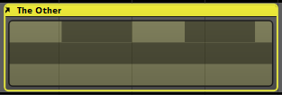
- Content Graphic (Multiple means of editing)
- If the event referenced by an event instrument has a parameter sheet for its timeline, the content of that sheet is displayed on the instrument's trigger region, surrounded by a border.
- Fade Curves (Mouse-editable graphics)
- 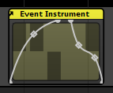
- A fade curve defines how an instrument's volume ramps from silence to full volume when the playback position moves onto the instrument, or how it ramps from full volume to silence when the playback position moves off the instrument. Instruments on action sheets can not have fade curves. Each instrument on a parameter sheet can have one fade curve for its left side, and one fade curve for its right. Instruments do not have fade curves by default.
19.4.2 Event Instrument Deck Properties
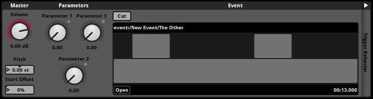
- Volume (Dial)
- 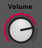
- Volume defines the gain applied to the master track volume fader of any instance of the associated event created by the event instrument. This means that the fader volume of an event instance created by an event instrument may differ from that of an instance of the same event created by your game's code.
Units: Decibels.
Automatable and Modulatable. - Pitch (Number box)
- Pitch defines the amount of pitch adjustment applied to the instrument's output. The pitch properties of instruments on parameter sheets other than the timeline sheet are compatible with autopitch modulators.
Units: Semitones.
Automatable and Modulatable. - Start Offset (Number box)
- 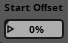
- The start offset of an event instrument determines the point within its associated event's timeline at which the timeline playback position should start when the instrument is triggered, expressed as a percentage of the length of the associated event's timeline. For this purpose, the associated event's timeline is assumed to start at position 0:00.000 and to end at the right edge of the rightmost instrument or logic marker on the event's timeline sheet.
Units: Percentage points.
Automatable and Modulatable. - Cut (Toggle button)
- An instrument's cut mode determines whether it stops playing when its trigger conditions cease being met.
- Parameter value (Dial)
- 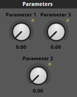
- If the event referenced by the event instrument has any user parameters, those parameters are displayed as dials in the deck when the event instrument is selected. The referenced event's built-in parameters and timeline parameter are not displayed in the deck when the event instrument is selected.
Automatable and Modulatable.
19.5 Scatterer Instrument
The scatterer instrument is a type of instrument with features that permit spatial and temporal randomization.
When a scatterer instrument is triggered, an item from its playlist is selected for play. A scatterer instrument's playlist can contain single instruments, event instruments, programmer instruments, multi instruments, command instruments, and silence instruments.
A scatterer instrument can select and spawn an instrument from its playlist regardless of when the previous one it spawned finishes playing, can randomize the volume and pitch of each spawned instance individually, and can assign a random offset to the position of each spawned instance for the purposes of panning and other 3D behaviors.
The item selected from a scatterer instrument's playlist depends on the instrument's playlist selection mode. By default, a scatterer instrument's playlist selection mode is set to shuffle. To change it, use the playlist selection mode dropdown menu.
19.5.1 Scatterer Instrument Trigger Region Properties
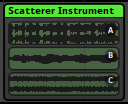
- Fade Curves (Mouse-editable graphics)
- 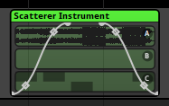
- A fade curve defines how an instrument's volume ramps from silence to full volume when the playback position moves onto the instrument, or how it ramps from full volume to silence when the playback position moves off the instrument. Instruments on action sheets can not have fade curves. Each instrument on a parameter sheet can have one fade curve for its left side, and one fade curve for its right. Instruments do not have fade curves by default.
19.5.2 Scatterer Instrument Deck Properties
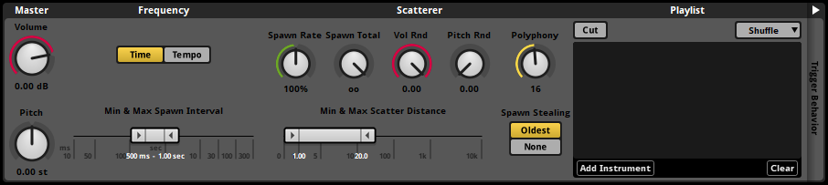 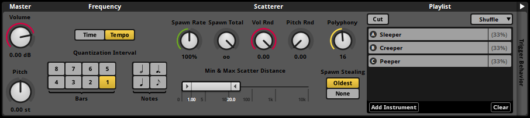
- Volume (Dial)
- Volume defines the gain applied to the instrument's output. If a random modulator is attached to this property, the adjustment applied by that modulator is randomized once each time the instrument is triggered. To randomize the volume of individual spawned playlist entry instances, see the Vol Rnd property, below.
Units: Decibels.
Automatable and Modulatable. - Pitch (Dial)
- Pitch defines the amount of pitch adjustment applied to the instrument's output. The pitch properties of instruments on parameter sheets other than the timeline sheet are compatible with autopitch modulators. If a random modulator is attached to this property, the adjustment applied by that modulator is randomized once each time the instrument is triggered. To randomize the pitch of individual playlist entry instances, see the Pitch Rnd property, below.
Units: Semitones.
Automatable and Modulatable. - Time/Tempo (Radio buttons)

- These buttons determine whether the scatterer instrument selects playlist entries to play sounds based on the passage of time, or on specific bars and beats. If time is selected, it selects entries to play in intervals determined by the min & max spawn interval property, below. If tempo is selected, it instead selects entries to play at intervals determined by the quantization interval property, below.
- Min & Max Spawn Interval (Ribbon slider)
- 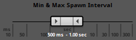
- Min & max spawn interval define the range of duration that can pass between the start of one playlist entry instance spawned by that scatterer instrument and the start of the next. These values are divided by the value of the spawn rate property, below. This property only appears if the time/tempo property is set to time.
Units: Milliseconds or seconds. - Quantization Interval (Radio buttons)
- 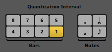
- A scatterer instrument's quantization interval specifies on which of the timeline's beats or bars the instrument can select an entry from its playlist to spawn. The bar and beat numbers used by this property are those that appear on the timeline when the editor is set to beats mode, as defined by the event's tempo markers. These values are influenced by the value of the spawn rate property, below. This property only appears if the time/tempo property is set to tempo.
- Spawn Rate (Dial)
- 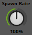
- This property scales the frequency with which the instrument selects a playlist entry to spawn. If the time/tempo property is set to time, the min and max spawn interval properties are divided by the spawn rate to determine the amount of time that passes between one playlist entry being selected to spawn and the next being selected. If the time/tempo property is set to tempo, the spawn rate instead represents the amount by which the instrument progresses towards a playlist entry being selected on each beat or bar to which the instrument is quantized; when progress equals or exceeds 100%, a playlist entry is selected to spawn and progress is reduced by 100 percentage points.
Units: Percentage points.
Automatable and Modulatable. - Spawn Total (Dial)
- 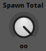
- This property specifies the maximum number of times the instrument may select an entry from its playlist to spawn each time it becomes triggered. If the instrument is untriggered before it reaches this spawn count, it stops selecting playlist entries.
- Vol Rnd (Dial)
- 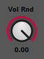
- This property acts like a randomization modulator on the volume of each entry in the scatterer instrument's playlist: Each time the instrument selects a playlist entry to spawn, it adjusts the volume of that spawned sound by a random amount between the value of this property and 0 dB.
Units: Decibels. - Pitch Rnd (Dial)
- 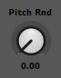
- This property acts like a randomization modulator on the pitch of each entry in the scatterer instrument's playlist: Each time the instrument selects a playlist entry to spawn, it adjusts the pitch of that spawned sound to a random value within the specified range of values, centered on the property's base value.
Units: Semitones. - Min & Max Scatter Distance (Ribbon slider)
- 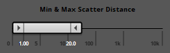
- These properties define the spatial randomization applied by the scatterer instrument. Each time the scatterer instrument selects a playlist entry to spawn, the position of the spawned sound is set to a random location in 3D space that's no closer to the event emitter than the min scatter distance and no further from the event emitter than the max scatter distance. This randomized position is used to calculate the spawned sound's 3D attributes for the purposes of spatialization and other 3D behavior.
- Polyphony (Dial)
- This dial sets the maximum number of spawned sounds that an instance of the scatterer instrument may play simultaneously. If the number of simultaneously playing spawned sounds is equal to this number when the instrument attempts to select a playlist entry to spawn, it will fail to span the new sound or cull one of its existing sounds as per the instrument's spawn stealing property, below.
- Spawn Stealing (Radio buttons)
- These buttons determine how a scatterer instrument behaves when it attempts the select a new playlist entry to spawn when the number of concurrently-playing spawned sounds is equal to the instrument's polyphony. If spawn stealing is set to oldest, the oldest playing spawned sound is culled, and the selected playlist entry is spawned normally. If spawn stealing is set to none, none of the playing spawned sounds are culled, and the selected playlist entry is not spawned.
- Cut (Toggle button)
- An asynchronous instrument's cut mode determines whether it stops playing when its trigger conditions cease being met. The cut toggle button only appears in the deck of asynchronous instruments.
- Playlist Selection Mode (Dropdown menu)
-
This property represents the playlist selection mode of the instrument's playlist. There are four playlist selection modes:
- Shuffle. Items in the playlist are selected for playback in random order. In addition, as long as the playlist contains at least three instruments and does not include play percentages, no instrument in that playlist will be selected twice in a row.
- Randomize. Items in the playlist are selected for playback at random. The frequency and recency with which items have been selected in the past have no bearing on the probability of those items being selected in future.
- Sequential - local scope. Items in the playlist are selected for playback in the order in which they are listed. Only items selected within the same event instance are taken into account, so a new instance of an event always starts by selecting the first item in the playlist.
- In sequential - global scope. Items in the playlist are selected for playback in the order in which they are listed. Every instance of the event is taken into account, so a new instance of an event always selects the playlist item following the item that was selected most recently, even if that item was selected in a different instance of the event.
-
Playlists are set to shuffle by default.
- Playlist (Playlist)
- A list of all the instruments that the scatterer instrument can select to spawn. Each instrument has a letter that corresponds to the letters that appear on the scatterer instrument's content graphic, a name, and a play percentage that weights selection when the instrument's playlist selection mode is shuffle or randomize. Selecting a playlist entry causes the corresponding instrument to be displayed in the deck to the right of the scatterer instrument.
19.6 Programmer Instrument
A programmer instrument is kind of instrument that's a placeholder for a sound to be selected at run time. When a programmer instrument is triggered in your game, it generates a callback which is passed to your game's code. Your game's code can then specify an audio file for the FMOD Engine to play. Programmer instruments otherwise function similarly to single instruments.
For an example of how programmer instruments can be used in a game's code, see the Dialog and Localization section of the FMOD Engine User Manual.
For the purposes of auditioning in FMOD Studio, programmer instruments can be assigned placeholder audio files. These placeholder files are not built into banks and do not play when the instrument is triggered in your game. They exist purely so that programmer instruments can make a sound when auditioned in FMOD Studio.
19.6.1 Programmer Instrument Trigger Region Properties
- Placeholder Graphic (Multiple means of editing)
- The waveform of the placeholder audio file associated with a programmer instrument is displayed on its trigger region. If the instrument is asynchronous, this content is surrounded by a border. If the instrument is synchronous and its play count is greater than one, multiple copies of the waveform may be displayed, provided the trigger region is long enough. This graphic has no impact on in-game behavior, but may be a useful guide when positioning instruments, automation, and logic markers.
- Fade Curves (Mouse-editable graphics)
- A fade curve defines how an instrument's volume ramps from silence to full volume when the playback position moves onto the instrument, or how it ramps from full volume to silence when the playback position moves off the instrument. Instruments on action sheets can not have fade curves. Each instrument on a parameter sheet can have one fade curve for its left side, and one fade curve for its right. Instruments do not have fade curves by default.
19.6.2 Programmer Instrument Deck Properties
- Volume (Dial)
- Volume defines the gain applied to the instrument's output.
Units: Decibels.
Automatable and Modulatable. - Pitch (Number box)
- Pitch defines the amount of pitch adjustment applied to the instrument's output. The pitch properties of instruments on parameter sheets other than the timeline sheet are compatible with autopitch modulators.
Units: Semitones.
Automatable and Modulatable. - Start Offset (Number box)
- The start offset of a programmer instrument determines the point within an audio asset from which it starts playing when the instrument is triggered, expressed as a percentage of the length of the audio asset. For asynchronous instruments, this directly determines the position from which the audio file begins to play when the instrument is triggered. For synchronous instruments, this offset is added to the position of the playback position inside the instrument's waveform, and so is an exception to the rule that the part of a synchronous instrument's waveform that plays is the part of the waveform that's overlapped by the playback position.
Units: Percentage points. - Async (Toggle button)

- A programmer instrument's synchronous or asynchronous state determines whether it is possible to seek or scrub within the waveform displayed on its trigger region. If an instrument is synchronous, the part of the asset that plays while the instrument is triggered depends on the position of the playback position on the instrument's trigger region; whereas if the instrument is asychronous, the playback position's location on the instrument has no effect on which part of the associated asset plays. Instruments on parameter sheets other than the timeline are always asynchronous. For more information about synchronous and asynchronous instruments, see the Synchronous and Asynchronous Instruments section of the Working With Instruments chapter.
- Cut (Toggle button)
- An asynchronous instrument's cut mode determines whether it stops playing when its trigger conditions cease being met. The cut toggle button only appears in the deck of asynchronous instruments.
- Loop Instrument (Toggle button)

- Looping a programmer instrument causes it to loop in accordance with its play count property. Specifically, the play count of a synchronous programmer instrument is the number of times its placeholder graphic is iterated on that instrument's trigger region, limited by the amount of horizontal space on that trigger region, and also determines how many times an audio file played by the instrument will play as if the instrument were a single instrument; whereas the play count of an asynchronous instrument is the number of times that instrument plays an audio file when triggered. This toggle button is visually identical to the Loop Playlist button found on multi instruments, but differs in function.
- Play Count (Number box)
- This property is only available for instruments whose loop instrument or loop playlist toggle buttons are enabled. It determines the number of times that instrument plays, as described in the sections on those toggle buttons. If this property is infinite on an asynchronous instrument, the associated instrument or playlist will finish playing out its current loop then stop looping when the instrument is untriggered; but if it is finite, it will loop a number of times equal to play count even if the instrument is untriggered before it is finished.
- Placeholder Preview (Multiple means of editing)
- The waveform of an audio asset associated with a programmer instrument is displayed in the instrument's placeholder preview. This placeholder has no impact on in-game behavior, but can be useful when auditioning the event in FMOD Studio.
19.7 Command Instrument
A command instrument is a kind of instrument that does not produce audio output. Instead, when a command instrument is triggered, it issues a command to some part of your FMOD Studio project. Commands can be used to change parameter values and to stop and start events and snapshots.
19.7.1 Command Instrument Trigger Region Properties
Command instruments have no unique trigger region properties.
19.7.2 Command Instrument Deck Properties
- Command Type (Dropdown menu)
-
The type of command associated with the instrument. Each command type does something different, as described below.
- Start event. Creates a new instance of the target event or snapshot.
- Stop event. Causes all instances of the target event or snapshot to enter the stopping play state.
- Stop event - immediate. Causes all instances of the target event or snapshot to enter the stopped play state.
- Set parameter. Sets the value of the target parameter. If the target parameter is a local parameter, its value is set only in the local event instance; if the target parameter is a global parameter, its value is set globally.
- Increment parameter. Increases or decreases the target parameter by a specific amount, capped by the minimum and maximum values of the parameter. If the target parameter is a local parameter, its value is incremented only in the local event instance; if the target parameter is a global parameter, the global parameter's value is incremented.
- Target (Dropdown menu)
- The target of the command. If the command type is start event, stop event, or stop event - immediate, the target must be an event or snapshot. If the command type is set parameter or increment parameter, the target must be a parameter.
- Value (Number box)
- The value to which the target parameter is to be set. This property is only available if the command type is set parameter.
- Delta Value (Number box)
- The value by which the target parameter is to be incremented (or decremented, if the delta value is negative). This property is only available if the command type is increment parameter.
19.8 Silence Instrument
A silence instrument is a kind of instrument that does not produce any output. When added to a consecutive action sheet or the playlist of a multi instrument or scatterer instrument, a silence instrument allows you define a circumstance in which the action sheet or instrument does not produce any sound.
Silence instruments are always asynchronous.
19.8.1 Silence Instrument Trigger Region Properties

Silence instruments have no unique trigger region properties.
19.8.2 Silence Instrument Deck Properties
- Duration (Dial)
- Duration defines the time for which the silence instrument remains active after being triggered. The value of this property is meaningful only if something is waiting for the silence instrument to finish playing.
Units: Milliseconds or seconds.
Automatable and Modulatable.
19.9 Snapshot Instrument
Snapshot instruments are a type of event instrument. Triggering a snapshot instrument causes a new instance of the corresponding snapshot to begin playing. When the playback position leaves the snapshot instrument, the instrument is untriggered, and the corresponding snapshot instance stops.
Each time a snapshot instrument is triggered, a new instance of the snapshot begins to play. This means that multiple simultaneous instances of the same snapshot can play at the same time, whether by multiple different snapshot instruments or as a result of the same snapshot instrument being triggered more than once in one or more instances of its parent event. Snapshot instances can also be started and stopped by your game's code.
The property values of a snapshot instance started by a snapshot instrument are affected by the snapshot instrument's intensity.
For more information about snapshots, see the snapshots and the tracks view section of the mixing chapter.
19.9.1 Snapshot Instrument Trigger Region Properties
- Fade Curves (Mouse-editable graphics)
- A snapshot instrument's fade curve defines how the snapshot instance's intensity ramps from zero to the value of its intensity property when the playback position moves onto the instrument, or how it ramps from the value of its intensity property to zero when the playback position moves off the instrument. Instruments on action sheets can not have fade curves. Each instrument on a parameter sheet can have one fade curve for its left side, and one fade curve for its right. Instruments do not have fade curves by default.
19.9.2 Snapshot Instrument Deck Properties

- Snapshot (Dropdown menu)
- This property indicates which snapshot plays when the instrument is triggered.
- Intensity (Dial)
- This property acts as a multiplier to the intensity of any instance of the associated snapshot created by the instrument.
19.10 AudioMotors2 Instrument
AudioMotors2 instruments are a type of instrument designed for vehicle engine sound synthesis. This instrument type is developed and maintained by Le Sound.
For more information about this plug-in, see Le Sound's documentation.
19.11 AudioRain Instrument
AudioRain instruments are a type of instrument designed for rain sound synthesis. This instrument type is developed and maintained by Le Sound.
For more information about this plug-in, see Le Sound's documentation.
19.12 AudioWeather Instrument
AudioWeather instruments are a type of instrument designed for weather sound synthesis. This instrument type is developed and maintained by Le Sound.
For more information about this plug-in, see Le Sound's documentation.
19.13 AudioWind Instrument
AudioWind instruments are a type of instrument designed for wind sound synthesis. This instrument type is developed and maintained by Le Sound.
For more information about this plug-in, see Le Sound's documentation.